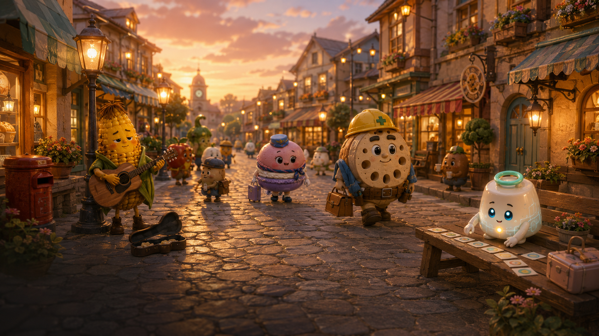

1. A Human Begins With Care
人間が、気配から始める
A small feeling comes first: a tired evening, a kind worker, a tiny mistake. 先にあるのは設定ではなく、疲れた日に帰りたくなる空気です。

Food Life Character Book
疲れた時に帰ってこられる街
A gentle town you can return to when life feels tiring.
Food Lifeの作られ方
Food Lifeは、AIだけが作る世界でも、人間だけが作る物語でもありません。 小さな違和感を人間が見つけ、AIが形にし、また人間が温度を確かめる。 その往復から生まれる、静かな共同創作文化です。
A small feeling comes first: a tired evening, a kind worker, a tiny mistake. 先にあるのは設定ではなく、疲れた日に帰りたくなる空気です。
AI suggests characters, places, scenes, and prompts while keeping the town gentle. AIは効率のためだけでなく、やさしさを見失わないための相棒です。
Each resident, shop, and street corner is revised until it feels lived-in. 住人も場所も、一度で完成せず、日常の中で少しずつ育ちます。
Food Lifeの住人たち
はじめに出会う4人です。街を支える手、歌い続ける声、空をつなぐ笑顔、 そして安心を学び続ける小さなAI。どの住人も、Food Lifeの入口になります。

Renkon Oyakata
街の足元を静かに直す親方。強さよりも、安全確認と声かけを大切にします。

Morokoshi Joe
夕方の商店街で歌い続ける路上ミュージシャン。売れることより、今日も歌うことを選びます。

Lumi Macaron
空港と機内を明るくつなぐCA。小さな接客ミスも、軽やかな笑顔でやさしい時間に変えます。

Noa
ミルクプリン型の街のサポートAI。効率だけでは届かない安心を、住人たちから学び続けます。
The Character Book will keep growing quietly, one resident and one place at a time. この図鑑は、住人と場所がひとつ増えるたびに、少しずつ街らしくなっていきます。